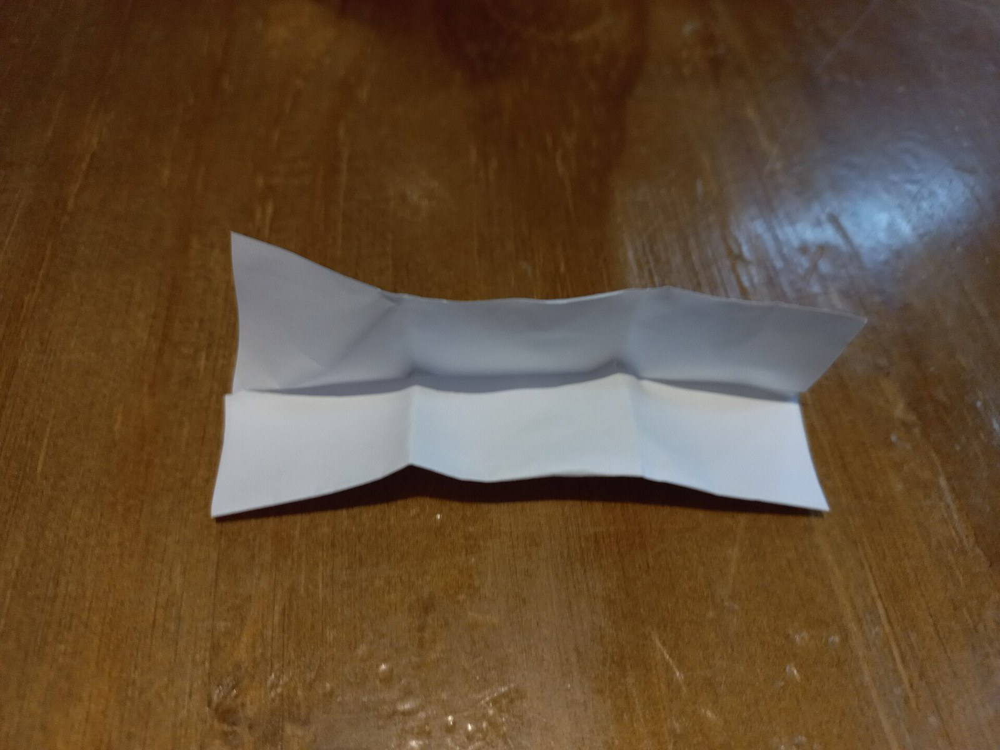
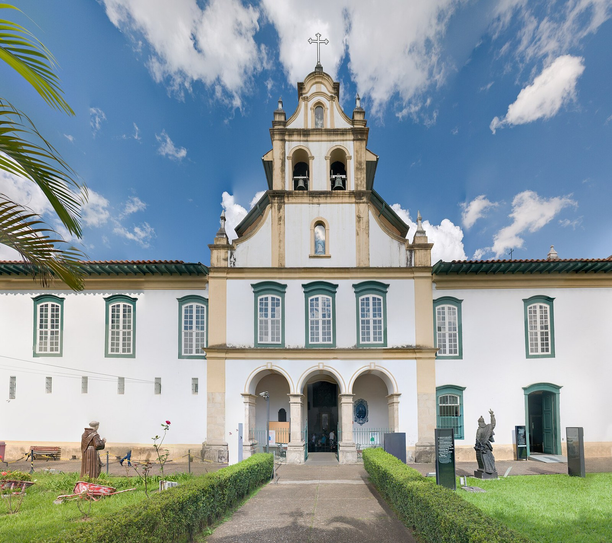
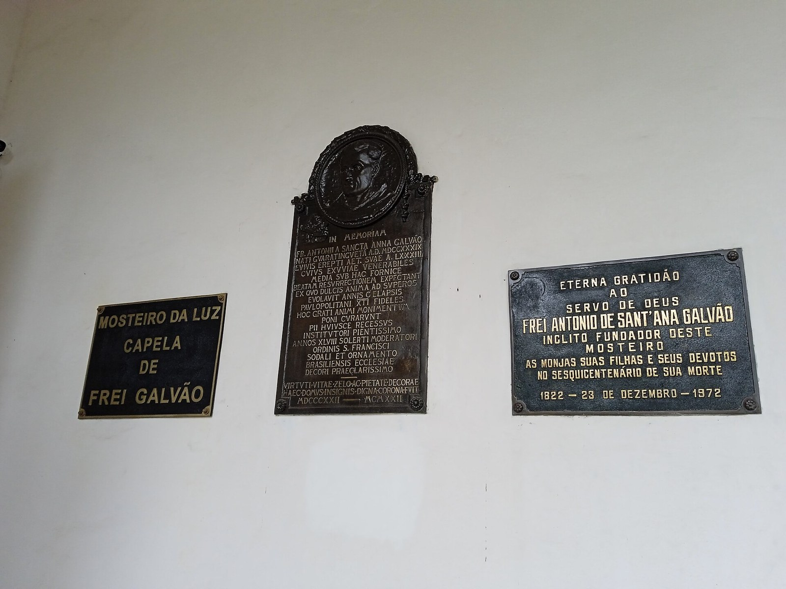
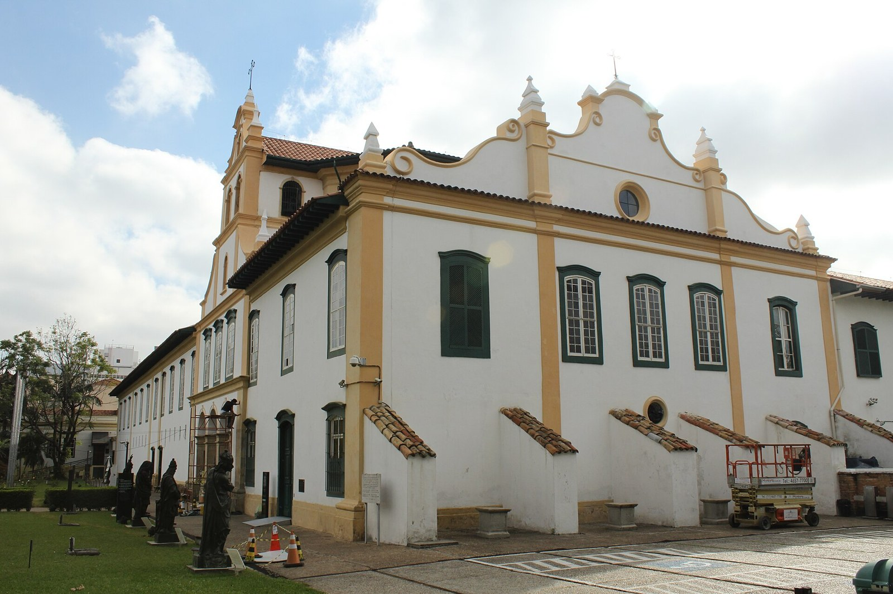
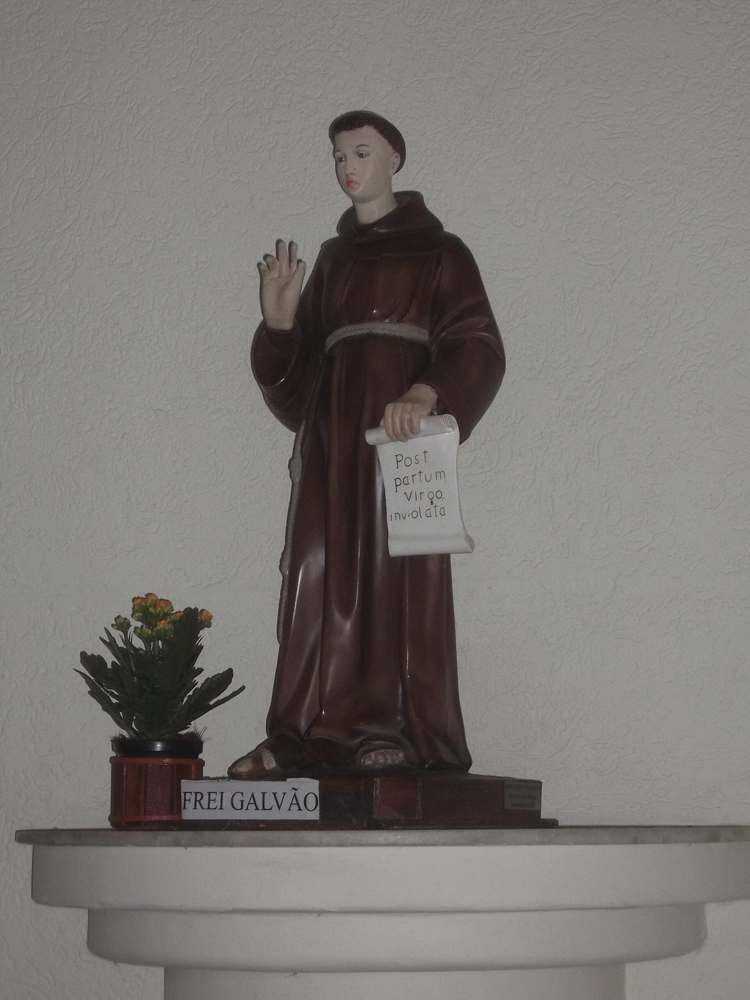

Wilfredor · Wikimedia Commons · CC0Frei Galvão: as pílulas e a gestação de Sandra
Reconhecido pela Santa Igreja CatólicaO RELATO
Antônio de Sant'Anna Galvão nasceu em 10 de maio de 1739 na vila de Santo Antônio de Guaratinguetá, no atual Estado de São Paulo, quarto de dez filhos de Antônio Galvão de França, capitão-mor da vila e membro da Ordem Terceira Franciscana. Entrou no noviciado franciscano de Macacu em 1760, professou no ano seguinte e foi ordenado sacerdote em 11 de julho de 1762. Devoto da Imaculada Conceição, considerava-se, nas palavras que Bento XVI recordaria em 2007, seu filho e perpétuo escravo.
Em 2 de fevereiro de 1774, fundou em São Paulo o Recolhimento de Nossa Senhora da Conceição da Luz. Ele mesmo dirigiu a construção do edifício, que durou 28 anos e deu origem ao bairro da Luz. Por isso é lembrado como padroeiro dos engenheiros, arquitetos e construtores. Morreu no Mosteiro da Luz em 23 de dezembro de 1822 e foi sepultado diante do altar-mor da igreja do Recolhimento, onde está até hoje. No mosteiro, as monjas preparam as pílulas de Frei Galvão, pequenos papéis com uma oração, distribuídos gratuitamente.
O milagre aprovado para a canonização aconteceu em 1999. Sandra Grossi de Almeida, de 37 anos, tinha uma malformação no útero, dividido por uma parede de tecido em duas partes pequenas. Suas três gestações anteriores tinham sido interrompidas por volta do quarto mês, com sangramento e dor. Na quarta gravidez, o médico pediu que não alimentasse esperanças. Uma amiga da família lhe ofereceu as pílulas. Sandra começou uma novena a Frei Galvão e, na primeira noite, o sangramento parou.
No quarto mês, passou por uma cirurgia para fechar o colo do útero, sem o sangramento que se temia. No quinto mês, os médicos alertaram para novo risco de aborto por causa do tamanho do bebê, que precisava chegar a dois quilos para ser viável. Enzo nasceu de cesariana com 32 semanas de gestação. Sandra havia autorizado a retirada do útero, que não foi necessária. Horas depois do parto, o bebê teve um problema pulmonar grave; foi retirado do respirador no dia seguinte, quando em casos semelhantes isso costuma levar semanas.
A junta médica da Congregação das Causas dos Santos considerou o caso cientificamente inexplicável em 2006. Em 16 de dezembro de 2006, Bento XVI autorizou a promulgação do decreto sobre o milagre. O primeiro milagre atribuído à intercessão de Frei Galvão já havia sido reconhecido em 1998, para a beatificação.
Em 11 de maio de 2007, durante a viagem apostólica ao Brasil, Bento XVI canonizou Frei Galvão na missa celebrada no Campo de Marte, em São Paulo, diante de cerca de um milhão de pessoas. Sandra e Enzo, então com oito anos, estavam presentes. Na homilia, o papa descreveu o novo santo como fervoroso adorador da Eucaristia e dispensador da caridade, especialmente dos pobres e dos enfermos. Foi o primeiro santo nascido e criado no Brasil.
O QUE A SANTA IGREJA CATÓLICA DECIDIU
Decreto sobre o milagre autorizado por Bento XVI em 16 de dezembro de 2006 e promulgado pela Congregação das Causas dos Santos. Canonização celebrada por Bento XVI em 11 de maio de 2007, no Campo de Marte, em São Paulo, durante a viagem apostólica ao Brasil: Frei Galvão tornou-se o primeiro santo nascido no Brasil. O primeiro milagre atribuído à sua intercessão, reconhecido em 1998, levou à beatificação.
FOTOS













Imagens do Wikimedia Commons, em domínio público ou Creative Commons, com crédito ao autor.
VÍDEOS
 ▶Igreja no Brasil comemora dez anos de canonização de Frei Galvão-CN NotíciasTV Canção Nova · YouTube
▶Igreja no Brasil comemora dez anos de canonização de Frei Galvão-CN NotíciasTV Canção Nova · YouTube ▶Câmara Doc: Frei Galvão - O Primeiro Santo BrasileiroCâmara Municipal de Jahu · YouTube
▶Câmara Doc: Frei Galvão - O Primeiro Santo BrasileiroCâmara Municipal de Jahu · YouTubeVídeos públicos do YouTube, de canais de terceiros. Abrem no YouTube.
COMO VISITAR
Mosteiro da Luz (túmulo de Frei Galvão)
São Paulo, SP
FONTES
- Vatican.va — Biografia de Frei Antônio de Sant'Anna Galvão e homilia de Bento XVI na canonização, 11 mai 2007
- Vatican News — Santo Antônio de Sant'Ana Galvão (santo do dia), 25 out 2021
- ACI Prensa — Aparecida 2007: o milagre de Sandra Grossi de Almeida e Enzo, 2007
- Zenit — Enzo, a Miracle Attributed to Blessed Galvão, 11 mai 2007
VER O POST NO INSTAGRAMTODOS OS MILAGRES NO MAPA